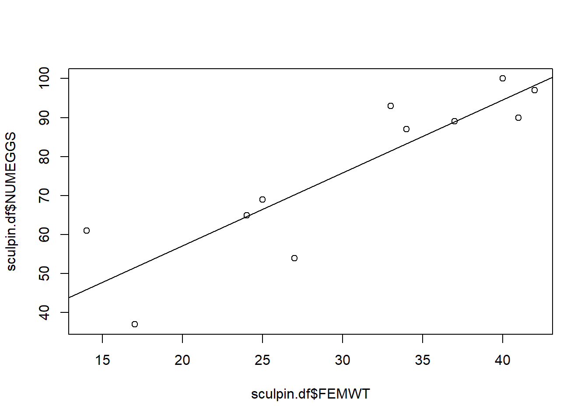
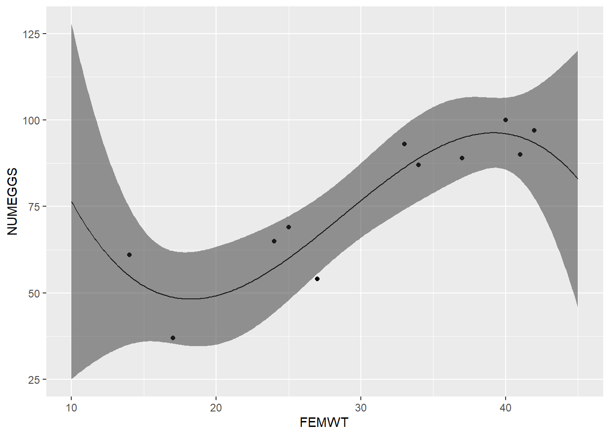

Click here to download the script! Save the script to your working directory (R Project directory).
Load your script in your RStudio Project. To do this, open your RStudio Project and click on the folder icon in the toolbar at the top and load your script.
R is a programming environment developed specifically for working with data and running statistical analyses! It seems about time to run some stats in R!
As in the previous submodule, we will primarily be working in base R instead of the tidyverse here. The tidyverse is great for preparing data for analysis, but the analyses themselves tend to occur outside of the tidyverse!
First, download the sculpin eggs data here and save this to your working directory.
# STATISTICS! ------------------
# Load Data ------------------
sculpin.df <- read.csv("sculpineggs.csv")
head(sculpin.df)## FEMWT NUMEGGS
## 1 14 61
## 2 17 37
## 3 24 65
## 4 25 69
## 5 27 54
## 6 33 93Let’s start by generating summary statistics, some of which are the same ones that are displayed by the “summary()” function. Most of the function names are pretty intuitive, like mean() and median():
# Summary Statistics ------------------
mean(sculpin.df$NUMEGGS) # compute sample mean## [1] 76.54545median(sculpin.df$NUMEGGS) # compute sample median## [1] 87min(sculpin.df$NUMEGGS) # sample minimum## [1] 37max(sculpin.df$NUMEGGS) # sample maximum## [1] 100range(sculpin.df$NUMEGGS) # both min and max.## [1] 37 100quantile(sculpin.df$NUMEGGS,0.5) # compute sample median using quantile function## 50%
## 87quantile(sculpin.df$NUMEGGS,c(0.25,0.75)) # compute sample quartiles## 25% 75%
## 63.0 91.5var(sculpin.df$NUMEGGS) # sample variance## [1] 418.8727sd(sculpin.df$NUMEGGS) # sample standard deviation## [1] 20.46638sd(sculpin.df$NUMEGGS)^2 # another way to compute variance## [1] 418.8727apply(sculpin.df,2,mean) # column means of data frame ## FEMWT NUMEGGS
## 30.36364 76.54545apply(sculpin.df,2,median) # column medians of data frame## FEMWT NUMEGGS
## 33 87# maybe you'd like to use some tidyverse functions instead:
sculpin.df %>% summarize(across(everything(),mean) ) ## FEMWT NUMEGGS
## 1 30.36364 76.54545########
# Or just use the "summary()" function!
summary(sculpin.df) # provides a set of summary statistics for all columns in a data frame. ## FEMWT NUMEGGS
## Min. :14.00 Min. : 37.00
## 1st Qu.:24.50 1st Qu.: 63.00
## Median :33.00 Median : 87.00
## Mean :30.36 Mean : 76.55
## 3rd Qu.:38.50 3rd Qu.: 91.50
## Max. :42.00 Max. :100.00If your data have missing values (coded as ‘NA’ in R), some statistical functions won’t work properly unless you specify an “na.rm=TRUE” argument (click here if you don’t already have the test dataset with missing values):
# Deal with missing data --------------
newdf <- read.table(file="data_missing.txt", sep="\t", header=T) # load dataset with missing data
mean(newdf$Export)## [1] NAmean(newdf$Export,na.rm = TRUE)## [1] 10.22222Plots (see beginning of module) take data exploration to the next level- we can start to discern patterns and identify outliers visually, giving us cues for further analyses we might want to perform.
# Plot data (base R)
#
# hist(sculpin.df$NUMEGGS)
# plot(x = sculpin.df$FEMWT,y = sculpin.df$NUMEGGS)
# Ggplot alternative:
ggplot(sculpin.df,aes(NUMEGGS)) + geom_histogram(bins=5)ggplot(sculpin.df,aes(FEMWT,NUMEGGS)) + geom_point()The plot above suggests a fairly strong relationship between sculpin weight (“FEMWT”) and number of eggs (“NUMEGGS”). Let’s try to model this relationship!
Note the use of the generic “summary()” function below, which returns something very different when the input object is a linear model vs. when the input object is a data frame!
Also note the use of the “predict()” function, which not only allows you to use the model to make predictions, but also reports the uncertainty bounds on these predictions (via confidence or prediction intervals).
# Linear Regression -------------------
m1 <- lm(NUMEGGS ~ FEMWT, data=sculpin.df) # fit linear regression model
summary(m1) # view model summary##
## Call:
## lm(formula = NUMEGGS ~ FEMWT, data = sculpin.df)
##
## Residuals:
## Min 1Q Median 3Q Max
## -16.2556 -3.8700 0.3543 4.5448 15.0538
##
## Coefficients:
## Estimate Std. Error t value Pr(>|t|)
## (Intercept) 19.7668 10.5497 1.874 0.093747 .
## FEMWT 1.8700 0.3325 5.624 0.000324 ***
## ---
## Signif. codes: 0 '***' 0.001 '**' 0.01 '*' 0.05 '.' 0.1 ' ' 1
##
## Residual standard error: 10.15 on 9 degrees of freedom
## Multiple R-squared: 0.7785, Adjusted R-squared: 0.7539
## F-statistic: 31.63 on 1 and 9 DF, p-value: 0.0003242summary(m1)$r.squared # extract R-squared## [1] 0.7784851confint(m1) # confidence intervals for intercept and slope## 2.5 % 97.5 %
## (Intercept) -4.098376 43.632008
## FEMWT 1.117797 2.622113AIC(m1) # report AIC (Akaike's Information Criterion, used to perform model selection) ## [1] 86.00155plot(x = sculpin.df$FEMWT,y = sculpin.df$NUMEGGS) # plot data
abline(m1) # plot line of best fit
# Use the "predict()" function! --------------
nd <- data.frame(FEMWT = 30) # create new data frame to predict number of eggs at FEMWT of 30
predict(m1,newdata=nd) # make prediction## 1
## 75.86547predict(m1,newdata=nd,interval="confidence") # make prediction and get confidence interval## fit lwr upr
## 1 75.86547 68.93463 82.79631predict(m1,newdata=nd,interval="prediction") # make prediction and get prediction interval## fit lwr upr
## 1 75.86547 51.87347 99.85748Sometimes we may be uncertain which model is “best”. In this case, we run a set of plausible models and compare these models using metrics of model fit and performance, like AIC (Akaike’s Information Criterion).
Note the use of the “I()” within the formula specification (i.e., the “[response] ~ [predictors]” statement). Using “I()” causes R to interpret what’s inside the parentheses literally (“as is”), instead of using R’s formula shorthands. For instance, you might try running a linear model (“lm()”) in the following two ways and see how the results differ!
Click here for more information on R’s formula notation.
# Explore the use of the "I()" syntax to interpret mathematical expressions literally (as is) within formulas.
mod_noI <- lm(NUMEGGS ~ FEMWT^2, data=sculpin.df) # fit linear regression model. But the "^2" doesn't seem to do anything here? What happened?
summary(mod_noI)
mod_withI <- lm(NUMEGGS ~ I(FEMWT^2), data=sculpin.df) # fit linear regression model
summary(mod_withI)
# try a model with a polynomial fit
mod_withpoly <- lm(NUMEGGS ~ poly(FEMWT,2),data=sculpin.df)
summary(mod_withpoly)
# try a log transformation on the response:
mod_logtrans <- lm(log(NUMEGGS) ~ FEMWT, data=sculpin.df)
summary(mod_logtrans)Below we perform AIC model selection and also visualize the differences between these alternative linear models.
A flexible method for visualizing the fit of alternative linear models involves overlaying predictions from each model (using the “predict()” function) on a basic scatterplot:
# Model selection example -------------------
m1 <- lm(NUMEGGS ~ FEMWT, data=sculpin.df) # fit linear regression model
summary(m1)
m2 <- lm(NUMEGGS ~ 1, data=sculpin.df) # fit linear regression with intercept only (null model)
summary(m2)
m3 <- lm(NUMEGGS ~ poly(FEMWT,2), data=sculpin.df) # fit polynomial regression
summary(m3)plot(NUMEGGS ~ FEMWT,data=sculpin.df) # plot data
abline(m1,col="black") # plot line of best fit
abline(m2,col="red") # plot intercept only model
# Use 'predict' to draw lines on scatterplot -----------------
# Here's a flexible method for drawing any arbitrary modeled relationship!
nd <- data.frame(FEMWT = seq(10,45,by=0.1)) # create new data frame to predict number of eggs from FEMWT of 10 to 45 by increments of 0.1
NUMEGGS.pred <- predict(m3,newdata=nd,interval="confidence") # make prediction using "predict()" function
lines(nd$FEMWT,NUMEGGS.pred[,1],col="green") # plot sqrt model (note the use of the "lines()" function to draw a line!)# some of you might want to try recreating this plot using gglot!
# Perform model selection! -------------
#Compare models using AIC
AIC(m1)## [1] 86.00155AIC(m2)## [1] 100.5815AIC(m3)## [1] 87.76849# which model has the lowest AIC?
# And finally, here's how you can draw a confidence interval or prediction interval around a non-linear regression relationship!
plot(NUMEGGS ~ FEMWT,data=sculpin.df) # plot data
NUMEGGS.confint <- predict(m3,newdata=nd,interval="confidence") # use "predict()" function to compute the confidence interval!
lines(nd$FEMWT,NUMEGGS.confint[,"fit"],col="green",typ="l",lwd=2) # plot fitted sqrt model
lines(nd$FEMWT,NUMEGGS.confint[,"lwr"],col="green",typ="l",lty=2) # plot fitted sqrt model
lines(nd$FEMWT,NUMEGGS.confint[,"upr"],col="green",typ="l",lty=2) # plot fitted sqrt model# alternative using ggplot:
NUMEGGS.confint2 <- as_tibble(cbind(nd,NUMEGGS.confint))
ggplot() %>% +
geom_point(data=sculpin.df,mapping=aes(FEMWT,NUMEGGS)) +
geom_path(data=NUMEGGS.confint2,aes(x=FEMWT,y=fit)) +
geom_ribbon(data=NUMEGGS.confint2,aes(x=FEMWT,ymin=lwr,ymax=upr),alpha=0.5)poly(FEMWT,3) as the response. Plot the results by
overlaying the regression line on a scatterplot using ggplot2. The
results should look like this:
# CHALLENGE EXERCISES -------------------------------------
#1. Fit a polynomial regression model with NUMEGGS as the response and `poly(FEMWT,3)` as the response. Plot the results by overlaying the regression line on a scatterplot using ggplot2.
#
#2. Use the model you built in part 1 to predict the number of eggs for FEMWT=5. What is the 95% confidence interval around this prediction? Is this prediction biologically reasonable?